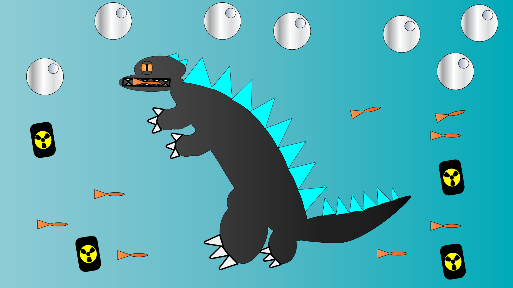
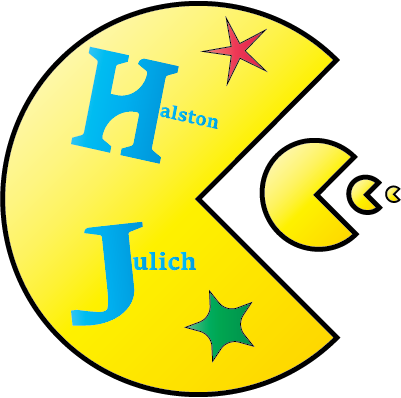
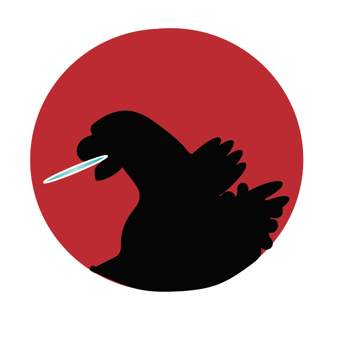
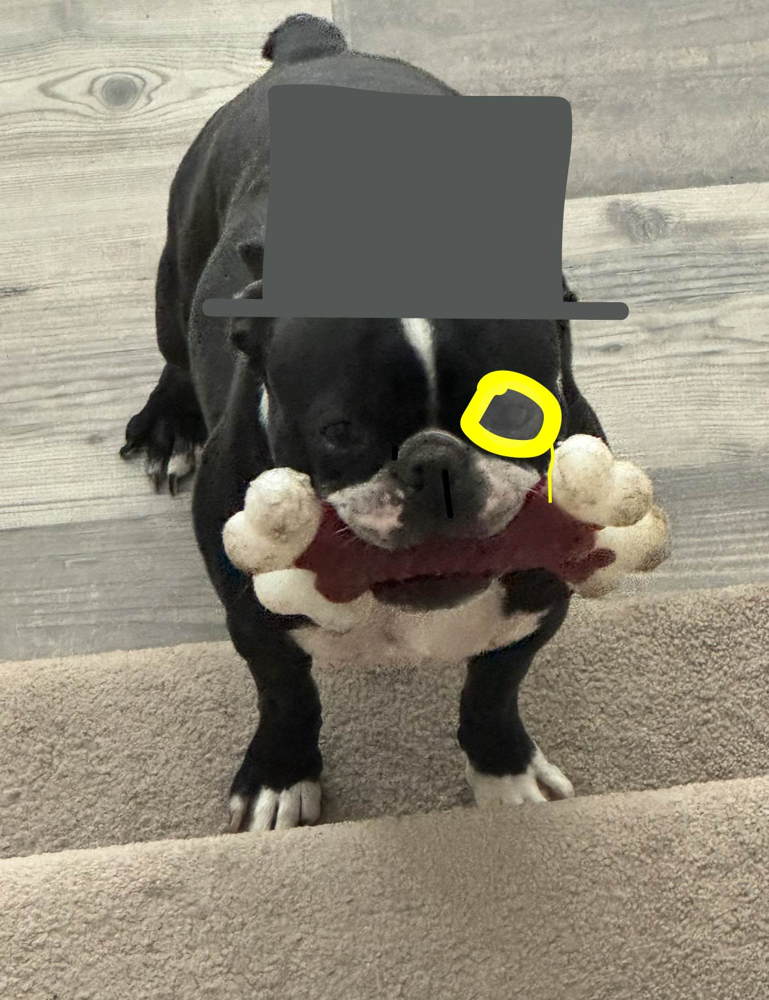
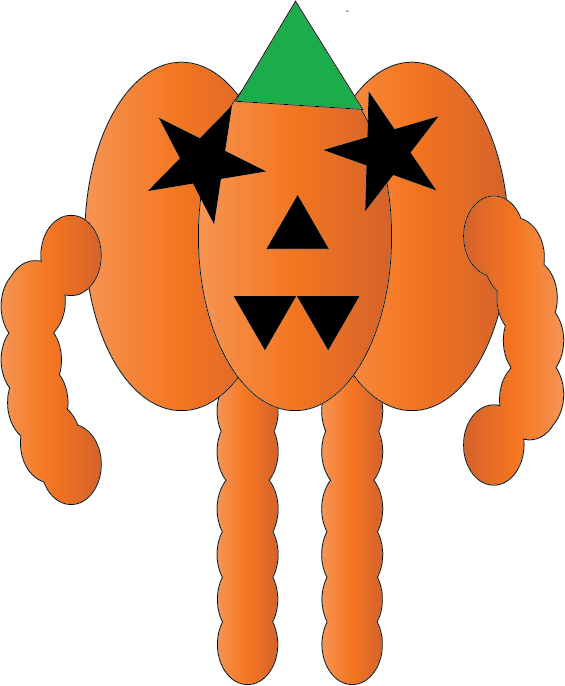

This Godzilla scene was my first illustrator project, it was created using circles and triangles, then joining them with the Shape Builder tool. I used some gradients on the background too.

Personal logo, sort of copying Pac-Man. I learned how to cut off parts of circles and thought it was cool so I made a "bigger fish" pac-man logo with my name on it.

My favorite project, I made this minimalist godzilla poster using shape builder. The background is the Japan flag to tie it in more.

Simple quick project using the pen tool to make my dog look like the monopoly dude.

A pumpkin with arms and legs, my final illustrator project made using shape building and gradients.